Adventure Directory
Real places and programs around the Foothills, from public pages by the organizers named on each card.
Details change, check with the organizer (dates, hours, fees and closures) before you go.
🎃 Looking for Halloween events? See the October calendar
No matches yet. Try 'winter' or .


🐴 Bar U Ranch: historic ranch, Percheron wagon ride & roping
Explore 35 historic ranch buildings, meet the Percheron horses on the free wagon shuttle, and try roping a replica steer.
📍 Open in MapsBy Parks Canada · Source
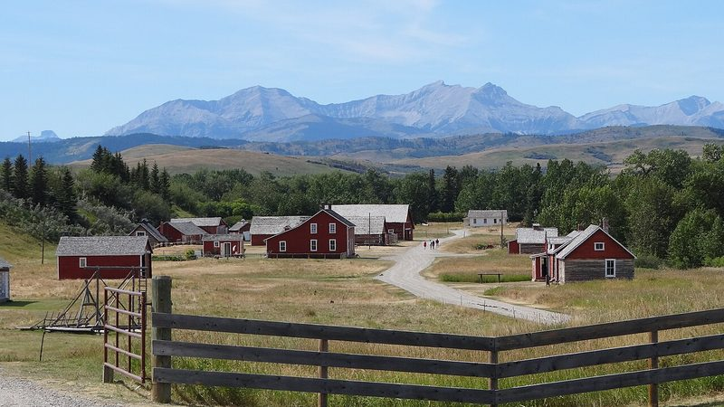

🐴 Parks Canada Xplorers at Bar U Ranch
Kids complete Xplorers challenges while visiting and earn a collectible Parks Canada reward.
📍 Open in MapsBy Parks Canada · Source
🐴 Anchor D Guiding & Outfitting: trail rides & pack trips
Running this winter. Two- and three-hour guided rides on the ridges around the ranch, plus family-friendly weekend trips and longer backcountry pack trips. Every child rides their own quiet horse. Bring your own helmet.
📍 Open in MapsBy Anchor D Guiding & Outfitting · Source
🐴 Moose Mountain Horseback Adventures: year-round trail rides & winter fun
Running this winter. Guided trail rides through foothills forest and meadows all year, plus winter snowshoe hikes and skating on the ranch pond. Reservations required.
📍 Open in MapsBy Moose Mountain Horseback Adventures · Source
🐴 Paramount Equestrian Centre: riding lessons & summer camps
Running this winter. Show jumping lessons on school horses in groups of 3 to 5, from first-time riders up to competition level.
📍 Open in MapsBy Paramount Equestrian Centre · Source
🐴 Ironstone Farms: Rookie Rider program
Running this winter. A fun first step into riding from certified coaches: warm-up games, grooming and tacking up, practice on a barrel horse, then riding a pony on a longe line.
📍 Open in MapsBy Ironstone Farms · Source
🐴 Cowley's Rafter Six Ranch: trail rides, pony rides & lessons
Short meadow rides for beginners, walked pony rides for the littlest kids, and private western riding lessons. Helmets included.
📍 Open in MapsBy Cowley's Rafter Six Ranch · Source
🐴 Boundary Ranch: winter sleigh rides (trail rides back in 2027)
Bookings open for winter sleigh rides starting Dec 5, 2026: a 30 to 45 minute horse-drawn ride with hot chocolate and a stop at the buffalo paddock (a wagon may be used if snow is low). The 2026 trail ride season is done; rides return in 2027.
📍 Open in MapsBy Boundary Ranch · Source
🗺️ Get a new scavenger hunt every week
A fresh themed hunt each week, only in the newsletter.
Sign me up🐴 Horsepowered Adventures: kids' riding camps & lessons
Arena camps and group lessons that teach horsemanship from the ground up, with overnight adventure camps for kids 10+ at the outfit's backcountry base camp near Caroline.
📍 Open in MapsBy Horsepowered Adventures · Source
🐴 Rocky Hills Ranch: western lessons & summer horse camps
Week-long summer camps where kids learn to catch, brush and saddle a horse, play gymkhana games, and finish with a Friday show for family. Western riding lessons too.
📍 Open in MapsBy Rocky Hills Ranch · Source
🐴 Blazing Hearts Ranch: lessons & kids' horse camp
Family-run ranch with day camps (9 am to 3 pm) mixing riding, games and horse care, plus lessons in several disciplines. Boots and a riding helmet are required for camp.
📍 Open in MapsBy Blazing Hearts Ranch · Source
🐴 HorsePlay! Pony Play at Big Rock Ranch
Parent-and-child pony time: brush a pony, learn the basics, then lead your child on a walk around the ranch pastures. Stroller-friendly tie-up pen.
📍 Open in MapsBy HorsePlay! at Big Rock Ranch · Source
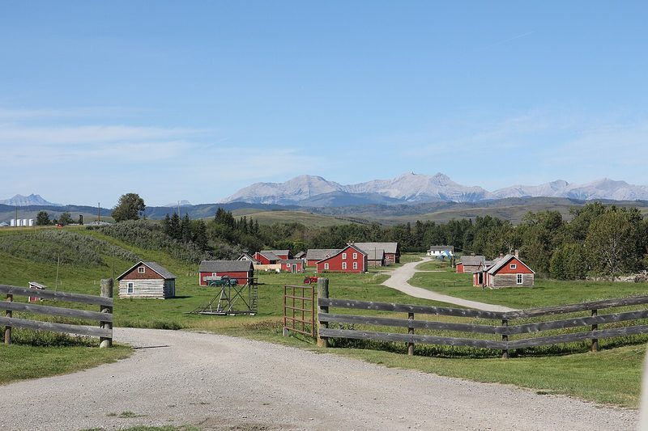

🥾 Bar U Ranch walking trails (Pekisko Creek, Viewpoint, Riparian)
A 3 km creekside trail plus shorter strolls to red chairs and a ridge viewpoint, with shady picnic spots.
📍 Open in MapsBy Parks Canada · Source
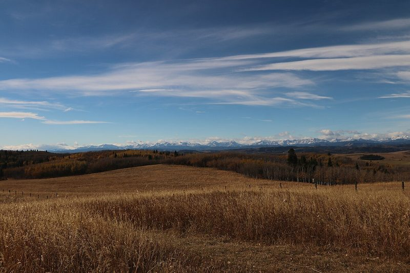
.jpg){kind=link}
🥾 Ann & Sandy Cross Conservation Area trails
About 20 km of interpretive trails through aspen forest and grassland on a protected wildlife area.
📍 Open in MapsBy Ann & Sandy Cross Conservation Area (charity) · Source

.jpg){kind=link}
🦌 Cross Conservation Area guided nature programs
Guided hikes and outdoor conservation education about local plants, wildlife and habitat.
📍 Open in MapsBy Ann & Sandy Cross Conservation Area · Source
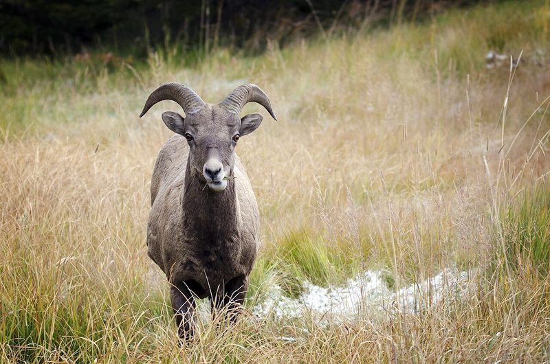

🦌 Kananaskis public interpretive programs
Free, no-reservation family programs, amphitheatre shows and chats with park interpreters.
By Alberta Parks · Source
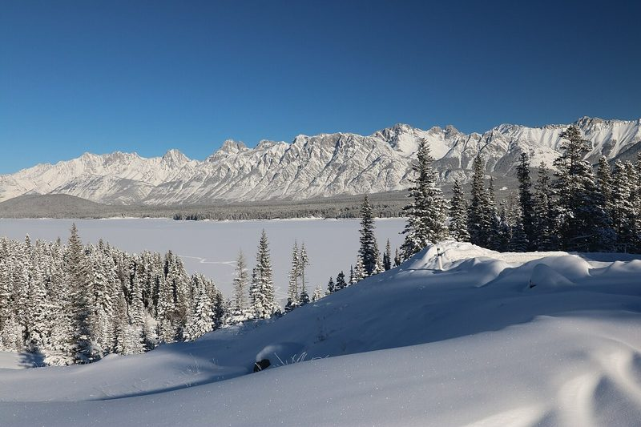
.jpg){kind=link}
🦌 Animal Hour at William Watson Lodge
Free interactive wildlife talk where kids can ask questions and touch animal artifacts.
📍 Open in MapsBy Alberta Parks (Kananaskis interpreters) · Source


🥾 Peter Lougheed Provincial Park
Family trails in summer and snowshoeing in winter in the heart of Kananaskis.
📍 Open in MapsBy Alberta Parks · Source


🥾 Kananaskis Country trails & day-use areas
Mountain trails and picnic areas a short drive west of the Foothills towns.
By Alberta Parks · Source
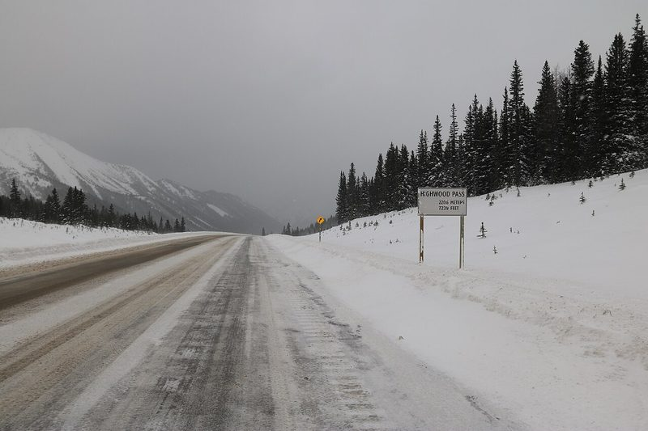
.jpg){kind=link}
🥾 Highwood Pass / Hwy 40 South scenic drive
A high-alpine scenic drive with trailheads; go before the Dec 1 closure and dress for mountain weather.
⚠️ Seasonal: Hwy 40 (Highwood Pass) closed Dec 1 to Jun 14 Alberta Parks
📍 Open in MapsBy Alberta Parks · Source
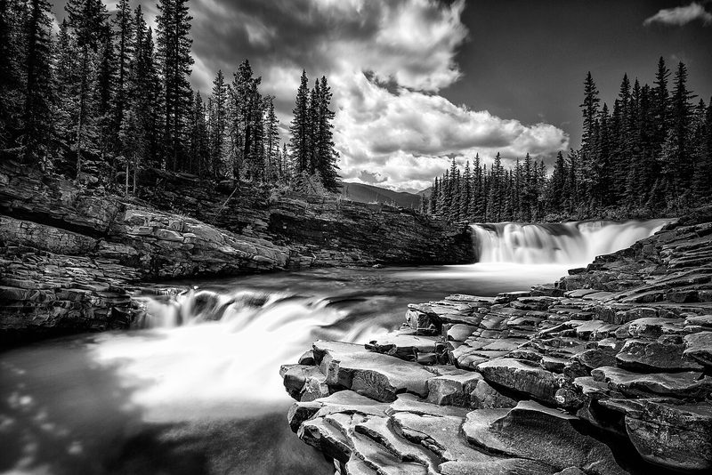

🦌 Sheep River Provincial Park & Sheep Falls day use
Waterfall views, picnic tables and fire pits, and wildlife viewing in the Sheep River valley.
⚠️ ⚠️ Seasonal: Sheep Falls day use open May 15 to Nov 30; Hwy 546 west of Sandy McNabb closed Dec 1 to May 14 Alberta Parks
⚠️ Active Alberta Parks safety advisory: washed-out bridge material in the Sheep River about 100 m downstream of Indian Oils Day Use creates a strainer hazard. Use caution near the water. Official advisory
📍 Open in MapsBy Alberta Parks · Source
❄️ Snowshoeing: easy family trails
Rated Simple (Class 1) avalanche terrain
Rated Simple (Class 1) in Alberta Parks' snowshoe brochure (2016). Check current trail conditions and avalanche info before you go. All four need a Kananaskis Conservation Pass to park.
- Troll Falls (about 1.4 to 1.7 km). Often packed and icy, so grippers may work better than snowshoes. See the Troll Falls card. Trail report 📍 Open in Maps
- Marsh Loop, Peter Lougheed (1.3 to 1.8 km loop). Best for the littlest kids. Trail report 📍 Open in Maps
- Hogarth Lakes Loop (3.9 km loop). Flat forest trail with lake views, off the Smith-Dorrien road (Hwy 742). Trail report 📍 Open in Maps
- Elkwood Loop (3.4 km loop). Longer but flat, from the Elkwood Amphitheatre. Trail report 📍 Open in Maps
Closer easy official snowshoe trails
Official snowshoe trails with no published avalanche rating. Check trail reports and use your judgement.
- Sandy McNabb Interpretive (1.7 km). Near Turner Valley, in the Sheep River area. Kananaskis Conservation Pass needed. Trail report 📍 Open in Maps
- Snowshoe Hare East (winter-only trail). At West Bragg Creek. Kananaskis Conservation Pass needed. Trail report 📍 Open in Maps
- Canmore Nordic Centre snowshoe loop (about 2.5 to 3 km). Follow the orange signs, and stay off the groomed ski trails. Kananaskis Conservation Pass needed. Trail report 📍 Open in Maps
Rent kid snowshoes (prices as of Oct 2026): Kananaskis Outfitters $10 for 2 hours or $16 a day (Kananaskis Village); Sports Rent Calgary $17 a day.
❄️ Winter safety
- Ice: at least 15 cm for one person and 20 cm for a group. Never go on storm ponds or moving water.
- Dress in layers and pack extra mitts and socks.
- Micro-spikes or ice cleats for icy trails.
- Check before you go: avalanche ratings and road conditions on 511 Alberta.
- Wildlife: stay well back and never feed animals.


❄️ West Bragg Creek trails
A big trail network for hiking, snowshoeing and cross-country skiing, with some equestrian trails.
📍 Open in MapsBy Alberta Parks · Source
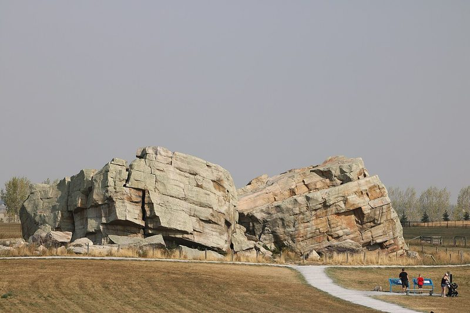
.jpg){kind=link}
🦌 Okotoks Erratic (Big Rock)
A giant glacier-carried boulder with a great story; stay off the rock, a protected Indigenous cultural site.
📍 Open in MapsBy Government of Alberta · Source


🎣 Highwood River fishing
A classic Foothills river with a bait ban and mostly catch-and-release trout; see our fishing page.
By Government of Alberta (regulations) · Source
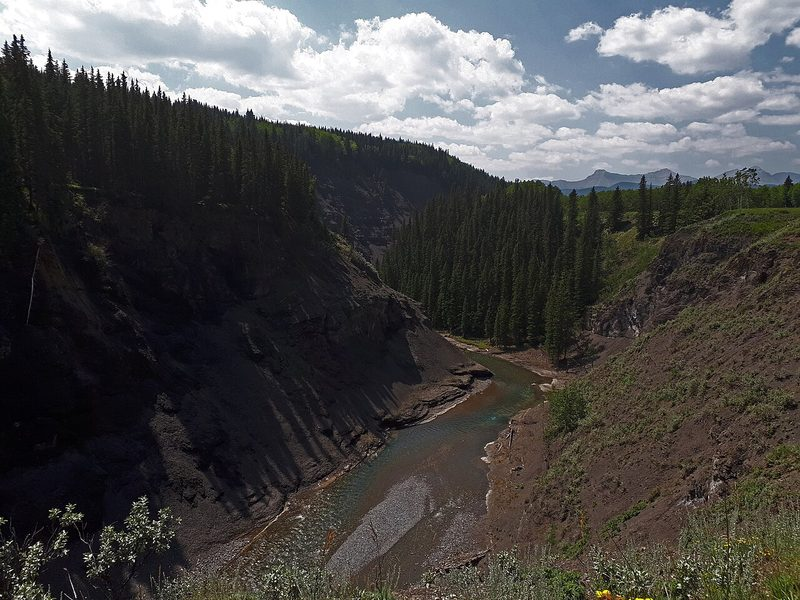

🎣 Family fishing on the Sheep River
The town recommends the Sheep River for family fishing, with Highwood River, Cataract Creek and Chain Lakes nearby.
By Town of Diamond Valley · Source
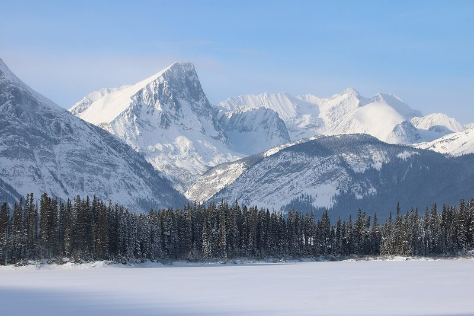
.jpg){kind=link}
🎣 Kids Can Catch (family fishing events)
Free events where mentors help new anglers bait, cast and safely release fish.
By Alberta Conservation Association · Source
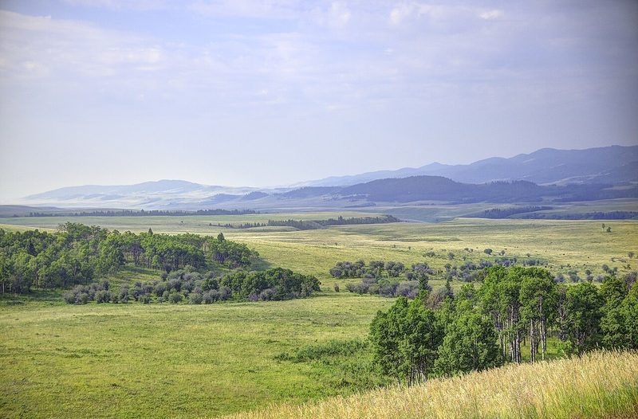

🎣 Family Day Ice Fishing at Chain Lakes
Free Kids Can Catch ice-fishing day with loaner rods, pre-drilled holes and mentors; RSVP required.
📍 Open in MapsBy Okotoks & District Fish and Game Association · Source
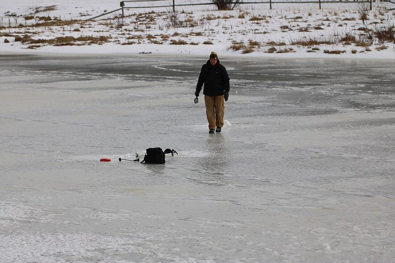
.jpg){kind=link}
❄️ Ice fishing safety
Never walk on less than 10 cm of ice and avoid aerated lakes and moving water.
By Government of Alberta (My Wild Alberta) · Source


🏹 Foothills Archery Club
A volunteer club affiliated with Archery Alberta that welcomes families of all ages and abilities.
By Foothills Archery Club (non-profit, volunteer) · Source
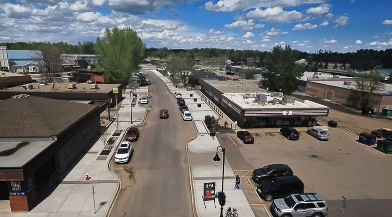

🥾 High River Happy Trails
Over 19 km of paved pathways along the river and through parks for walking and biking.
By Town of High River · Source
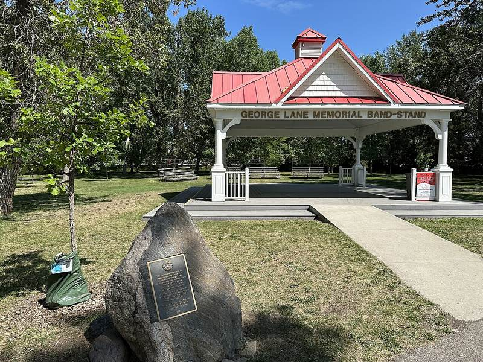

❄️ George Lane Memorial Park
A treed park with a playground and picnic areas, plus skating under the lights and a holiday light display in winter.
📍 Open in MapsBy Town of High River · Source
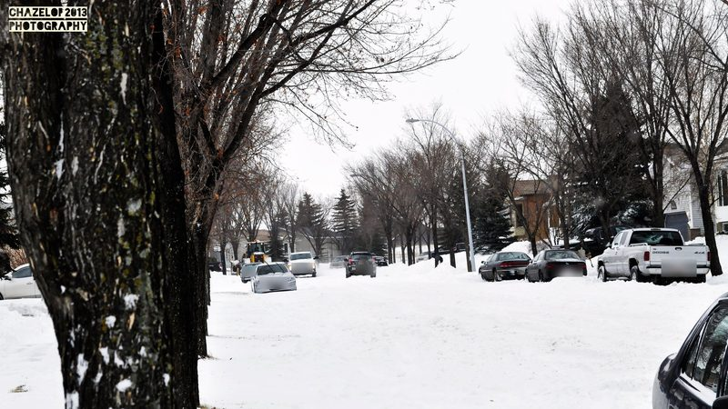
❄️ High River outdoor skating rink
A town-maintained outdoor rink that becomes a ball hockey and basketball court in warmer months.
📍 Open in MapsBy Town of High River · Source
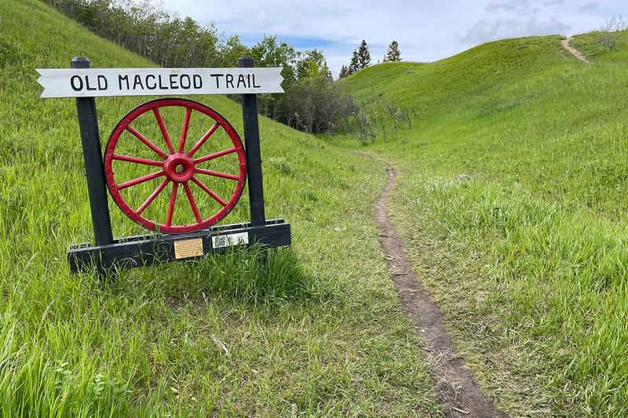

🥾 Okotoks pathways & parks
100 km of connected pathways, 72 playgrounds, a pump track and BMX track. In winter, see Okotoks outdoor rinks & toboggan hills under Winter Fun.
By Town of Okotoks · Source
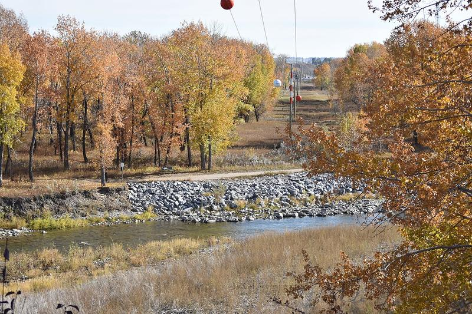
.jpg){kind=link}
🦌 Library in the Wild
Free outdoor games, crafts and hands-on activities for young kids.
📍 Open in MapsBy Okotoks Public Library · Source
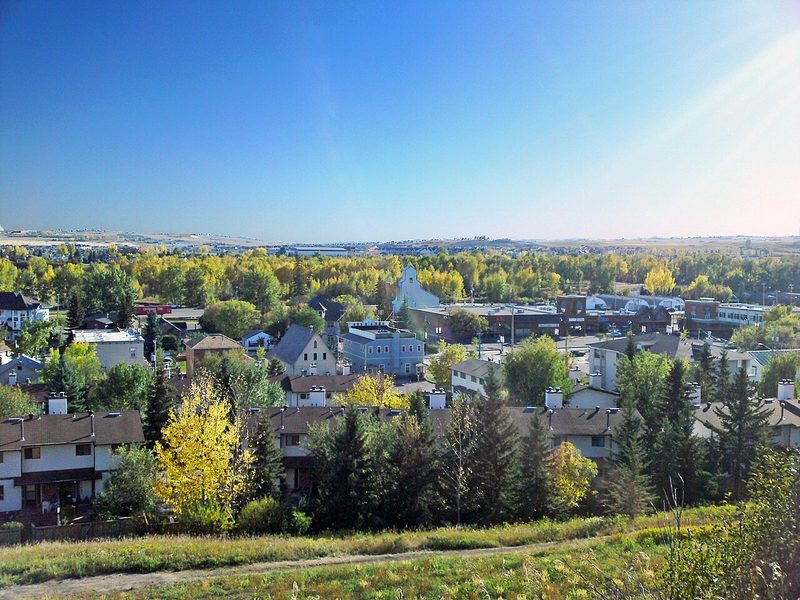

🦌 Nature Fridays
Drop-in nature crafts, nature walks and outdoor scavenger hunts led by town staff.
📍 Open in MapsBy Town of Okotoks (Conservation Educator) · Source
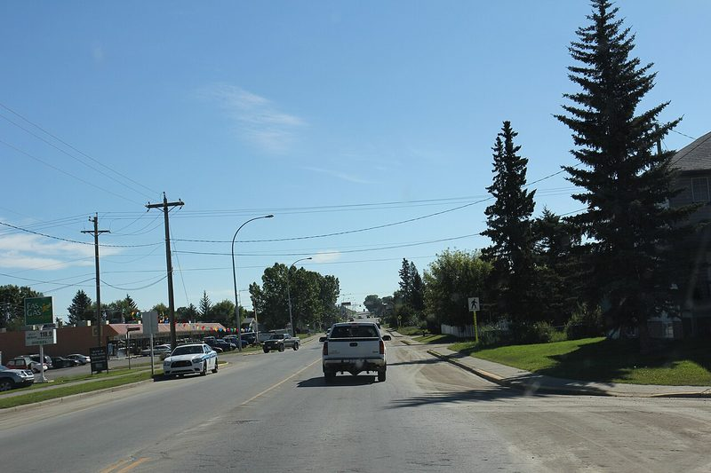

🥾 Friendship Trail
A gentle 3 km paved trail with viewpoints, rock formations and the old coal mine site.
📍 Open in MapsBy Town of Diamond Valley · Source
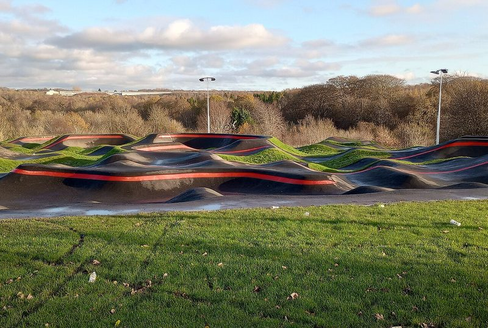

🥾 Diamond Valley Bike Pump Track
A looping dirt track with bumps and berms for pedal bikes.
📍 Open in MapsBy Town of Diamond Valley · Source
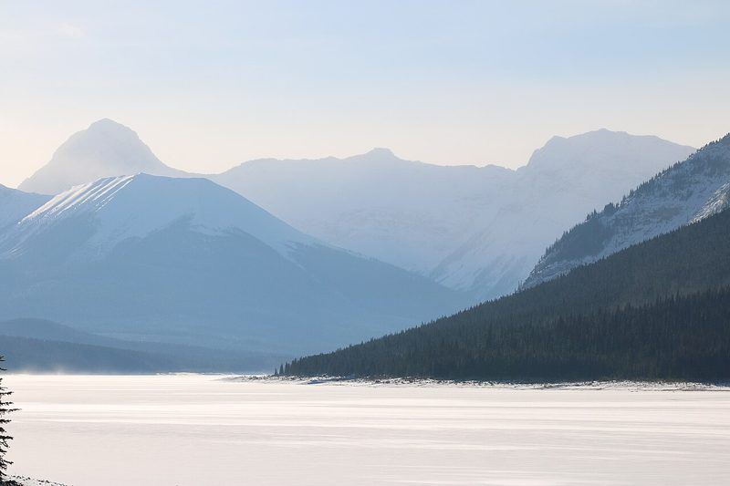
.jpg){kind=link}
❄️ Skating on natural ice (safety)
Ice should be 15 cm to skate alone and 20 cm for games; avoid ponds over running water.
By Alberta Health / Government of Alberta · Source
❄️ Okotoks indoor skating: Leisure Arena & town arenas
Skating's on now, whatever the weather. The Leisure Arena at the Viking Rentals Centre is a small, pond-style rink just right for families, and the big arenas run public skates too.
⚠️ CSA-approved helmets are mandatory for anyone under 18 on the ice, skaters or not. No sticks, pucks, toboggans or chairs on the Leisure Arena. Town of Okotoks
📍 Open in MapsBy Town of Okotoks · Source
❄️ High River indoor skating: Bob Snodgrass Recreation Complex
Drop-in public skates on the town's two indoor arenas. Little skaters can try Caregiver & Tot Skate classes.
⚠️ Helmets are mandatory on the ice, and only skates or ice cleats are allowed. Bring your own gear. Town of High River
📍 Open in MapsBy Town of High River · Source
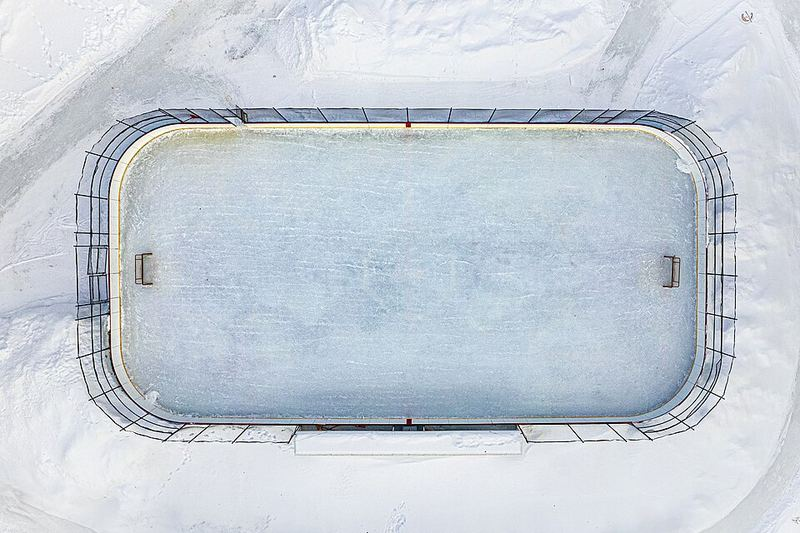
.jpg){kind=link}
❄️ Okotoks outdoor rinks & toboggan hills
Lace up on a town rink or grab a sled for a toboggan hill. The Town's live map shows which rinks and hills are open today.
⚠️ No skating on storm ponds, and the Town warns that Sheep River ice is poor and thin. Helmets are strongly recommended for sledding. Town of Okotoks
📍 Open in MapsBy Town of Okotoks · Source
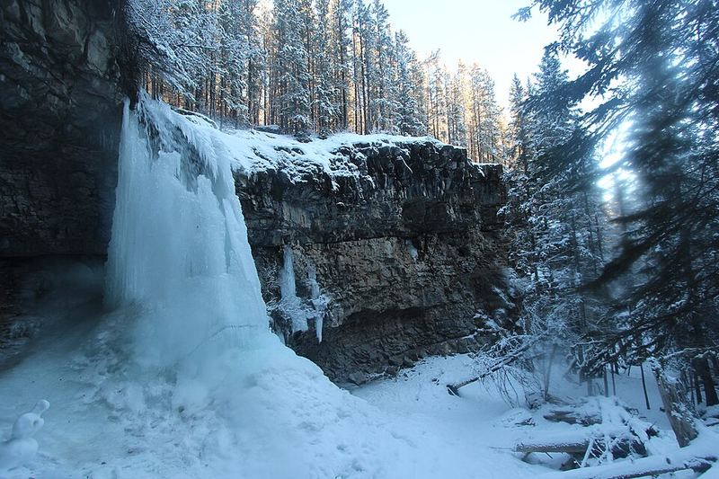
.jpg){kind=link}
❄️ Troll Falls winter walk & snowshoe, Kananaskis
A short forest walk or snowshoe (about 1.4 to 1.7 km) to a waterfall, rated Simple (Class 1) avalanche terrain in Alberta Parks' snowshoe brochure. The trail is usually icy in winter, so ice grippers often work better than snowshoes, and in deep winter the falls can freeze into an ice fall. Check current trail reports before you go.
⚠️ May be icy anytime from October to May, so bring micro-spikes (and poles). Stay behind the rockfall barricades near the falls. Trail report
📍 Open in MapsBy Alberta Parks · Source
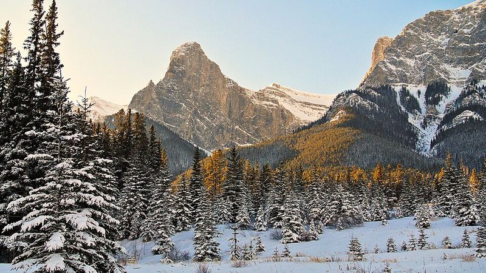
.jpeg){kind=link}
❄️ Canmore Nordic Centre
Ski the 6.5 km lit loop, try the snowshoe and fat-bike trails, or zoom down the toboggan hill. Gear rentals and lessons are on site. Season-pass deal: regular season passes are 10% off if bought by Oct 31, 2026 (the $400 family pass is $360) at Shop.AlbertaParks.ca.
⚠️ The early season (Oct 17 to Nov 14) is not for beginners. Check the trail report for advisories and closures before you go. Alberta Parks
📍 Open in MapsBy Alberta Parks · Source
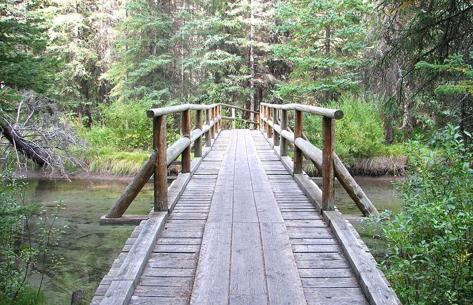

❄️ Fenland Trail winter walk, Banff
An easy, flat 2.1 km forest loop beside the creek, perfect for little legs.
⚠️ Ice cleats and poles are recommended. Wildlife is active in winter, so carry bear spray and keep your distance. Parks Canada notes hazardous avalanche terrain next to this trail, so stay on it. Parks Canada
📍 Open in MapsBy Parks Canada · Source
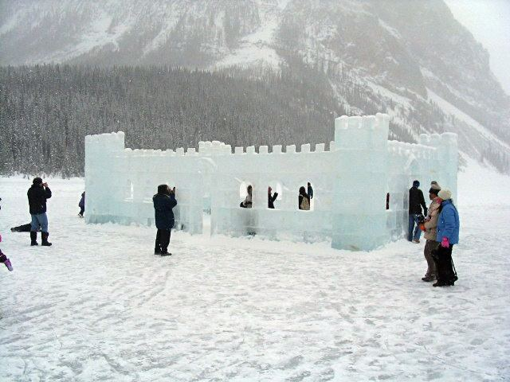

❄️ Banff SnowDays festival
A winter festival of ice sculptures and snowy fun. The family Weekend of Wonder is Jan 29 to 31, and Ice Magic at Lake Louise is Feb 3 to 7.
📍 Open in MapsBy Banff & Lake Louise Tourism · Source
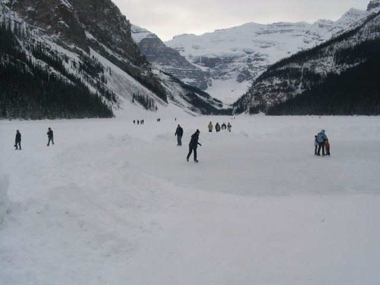

❄️ Lake Louise natural-ice skating
When the ice is ready, skate on a mountain lake ringed by peaks.
⚠️ Parks Canada does not test natural ice. Ice should be at least 15 cm for one person and 20 cm for a group. Parks Canada
📍 Open in MapsBy Parks Canada · Source
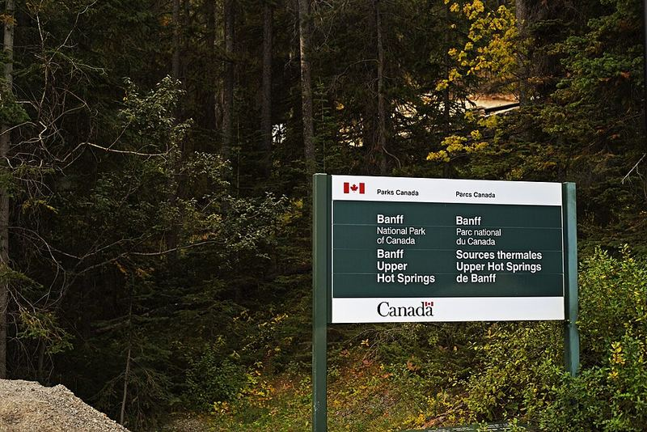

❄️ Banff Upper Hot Springs
Soak in a warm outdoor mineral pool while snow falls on the mountains.
📍 Open in MapsBy Parks Canada · Source
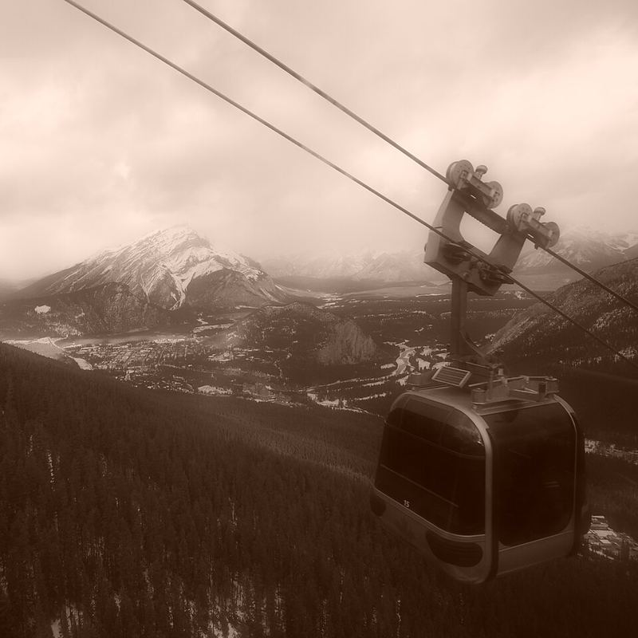
.jpg){kind=link}
❄️ Banff Gondola
Ride a gondola to the top of Sulphur Mountain, walk the summit boardwalk, and try the junior explorer program.
📍 Open in MapsBy Pursuit (Banff Jasper Collection) · Source
🎣 Chain Lakes Reservoir fishing
On Alberta's put-and-take trout stocking list, so catchable trout are stocked. Bait: Bait allowed. Limits: 5 trout (any size), 3 northern pike, 15 yellow perch.
📍 Open in MapsBy Government of Alberta (regulations) · Source
🎣 Mount Lorette Ponds fishing
Small, calm ponds with their own special stocked-pond rules. A good size for first casts. Bait: Bait allowed (no bait fish). Limits: 2 trout total; 3 walleye, 3 pike, 15 perch.
📍 Open in MapsBy Government of Alberta (regulations) · Source
🎣 Sibbald Lake fishing
Stocked put-and-take trout lake. Bait: Bait allowed. Limits: 5 trout (any size), 3 northern pike, 15 yellow perch.
📍 Open in MapsBy Government of Alberta (regulations) · Source
🎣 Sibbald Meadows Pond fishing
Stocked put-and-take trout pond. Bait: Bait allowed. Limits: 5 trout (any size), 3 northern pike, 15 yellow perch.
📍 Open in MapsBy Government of Alberta (regulations) · Source
🎣 McLean Pond fishing
Stocked put-and-take trout pond. Bait: Bait allowed. Limits: 5 trout (any size), 3 northern pike, 15 yellow perch.
📍 Open in MapsBy Government of Alberta (regulations) · Source
🎣 Glenmore Reservoir fishing
A big fishery right in the city, with a season that closes for winter. Bait: Bait allowed (no bait fish). Limits: 5 trout; 5 mountain whitefish over 30 cm; 3 pike; 15 perch.
📍 Open in MapsBy Government of Alberta (regulations) · Source
🎣 Wedge Pond fishing
A small pond for practising your cast. Trophy-only harvest, so it's mostly catch and release. Bait: Bait ban. Limits: 1 trout over 50 cm; 0 Arctic grayling.
📍 Open in MapsBy Government of Alberta (regulations) · Source
🎣 Lower Kananaskis Lake fishing
Big mountain lake. A good spot for older kids learning lure fishing. Bait: Bait ban. Limits: 1 trout total (size minimums apply; see table).
📍 Open in MapsBy Government of Alberta (regulations) · Source
🎣 Upper Kananaskis Lake fishing
Mountain lake with day-use areas; mostly catch and release. Bait: Bait ban. Limits: 1 trout total (size minimums apply; see table).
📍 Open in MapsBy Government of Alberta (regulations) · Source